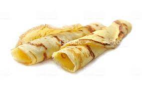

French Crepes

How to make a French Crepe
- step 1:Sift together flour, sugar, and salt; set aside.
Beat eggs and milk together in a large bowl with an electric mixer. Beat in flour mixture until smooth; stir in melted butter.
- step 2:Heat a lightly oiled griddle or frying pan over medium-high heat.
- step 3:Pour or scoop the batter onto the griddle, using approximately 2 tablespoons for each
crepe. Tip and rotate pan to spread batter as thinly as possible. Brown on both sides.
Repeat with remaining batter. Serve hot.
Home Page